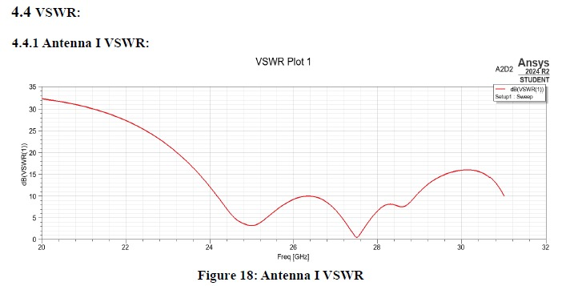

Projects
32-bit Superscalar RISC-V CPU
Tools: SystemVerilog, UVM
Description: Designed a superscalar RISC-V processor.
Key Work: Pipeline architecture and verification.
Outcome: Improved execution efficiency.
5G Microstrip Patch Antenna



Tools: CST / HFSS
Description: Designed and simulated a 5G antenna.
Key Work: Gain and bandwidth optimization.
Outcome: Improved radiation performance.
Key Contribution: Designed and validated the system independently.
High-k FinFET TCAD Simulation
Tools: Synopsys Sentaurus
Description: Simulated nanoscale transistor behavior.
Key Work: Analyzed leakage current and DIBL.
Outcome: Improved electrostatic control insights.